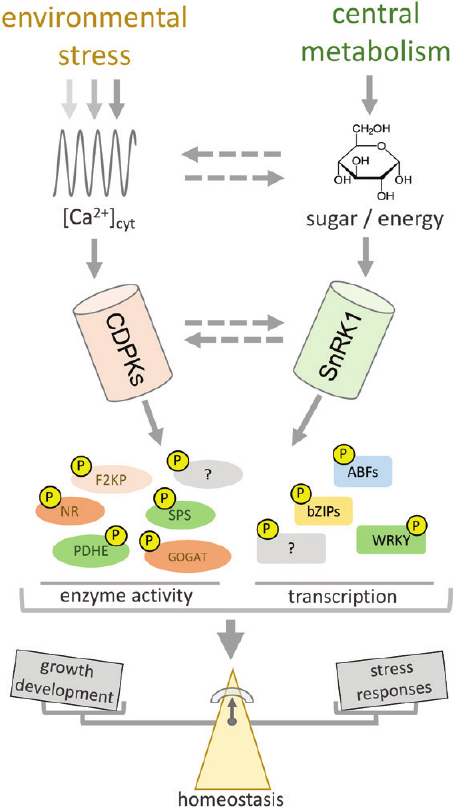

Integrating carbon/nitrogen and stress signalling
A review co-first-authored during the ITQB NOVA period, proposing how calcium-dependent protein kinases (CDPKs) and SnRK1 jointly balance central metabolism against environmental stress.
Alves HLS†, Matiolli CC†, Soares RC, Almadanim MC, Oliveira MM, Abreu IA. Carbon/nitrogen metabolism and stress response networks – calcium-dependent protein kinases as the missing link? Journal of Experimental Botany 72, 4190–4201 (2021). DOI: 10.1093/jxb/erab136.
Open article →